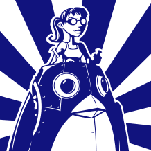
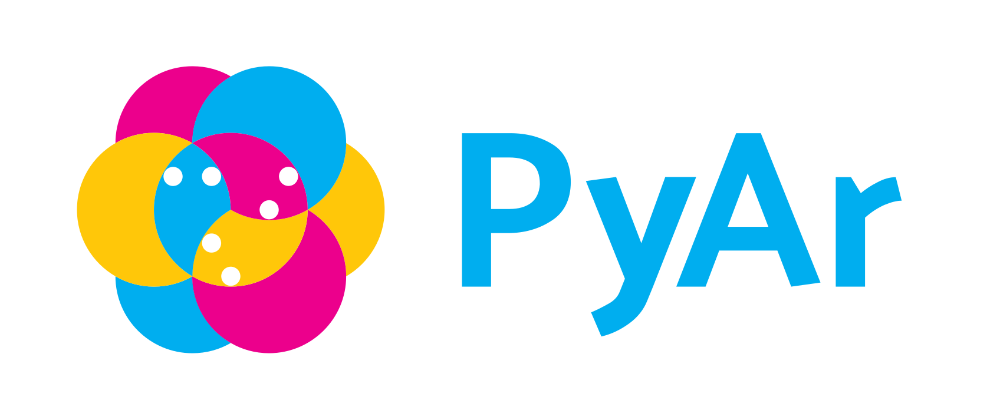

LinuxChix es un grupo internacional de usuarios y desarrolladores de software libre, fundado en 1999 con la intención de "apoyar a las mujeres en Linux". La fundadora Deb Richardson describió esta comunidad como una alternativa a los clásicos entornos netamente masculinos encontrados en foros técnicos online, y dio a LinuxChix dos reglas fundamentales: "be polite" (sé amable) y "be helpful" (sé de ayuda)..
LinuxChix Argentina comenzó a mediados del 2014 de la mano de un grupo de usuarios de Linux con diferentes antecedentes pero con un objetivo en común: establecer un grupo de usuarios técnicos y crear un ambiente positivo para ayudar a que más mujeres de Argentina se involucren tanto con Linux como con el software libre en general.
Python ArgentinaPython Argentina es un grupo de entusiastas de Python, que decidió aunar esfuerzos para crear una comunidad local como marco de referencia para la aplicación, difusión y mejora de este lenguaje.
Organizan eventos de distinto tipo para difundir el lenguaje y reuniones donde debaten ideas, mantienen una ListaDeCorreo a través de la cual se comunican, crean y mantienen este portal, el cual pretenden que tenga contenido útil tanto para los miembros de PyAr como para toda aquella persona que se interese por Python. Hoy estan abocados a lograr evolucionar como grupo, contribuyendo con diversos proyectos.
 